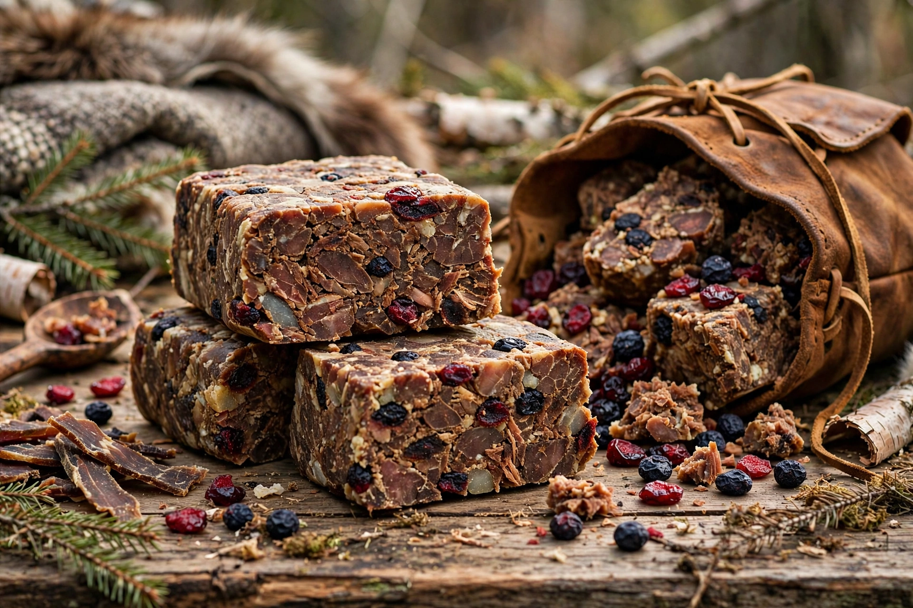

Pemmican (Cree pimîhkân) is a mixture of tallow, dried meat and sometimes dried berries invented by Indigenous peoples of North America. Highly nutritious and shelf-stable for years, it became essential to the fur trade and polar exploration.

Lean meat — bison, deer or elk — is dried and pounded into powder, mixed with roughly equal melted fat and sometimes saskatoon berries or cranberries, then packed into rawhide bags. Properly made pemmican resists spoilage for years.
The Métis of the Red River region supplied pemmican to Hudson's Bay Company voyageurs; disputes over its export led to the Pemmican War (1814–1820) and the Battle of Seven Oaks. Explorers including Shackleton and Scott carried pemmican (and its sledging ration hoosh) in Antarctica, and it was issued as an emergency ration in both World Wars.